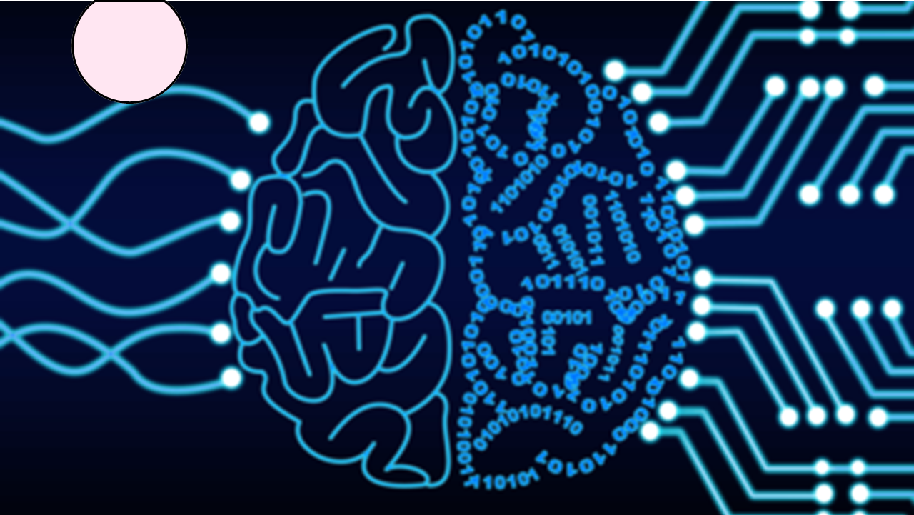
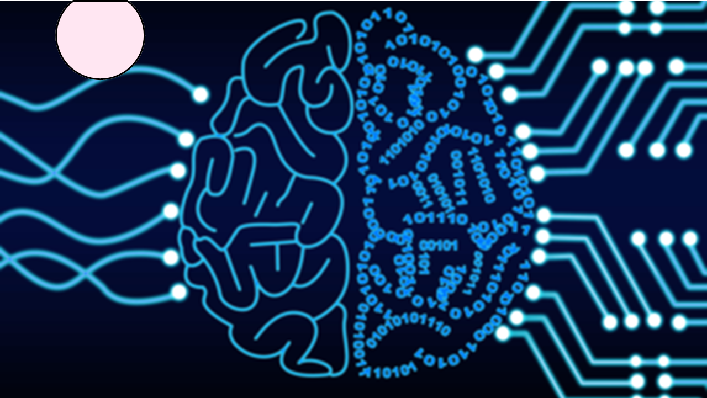

Automation Risks
 

A problem with automation for major industries that would utilise it is that actual Artificial Intelligence, that is computers with human levels of intelligence is still decades away. Routine functions are mostly what current systems can handle, and while there are AI and Machine Learning algorithms that can solve some non-linear problems, it is highly difficult if not impossible for them to handle and adapt to new situations. It is even less so for automated systems to create products using some sense of emotions or creativity (Syed, et al., 2020).
The risk of autonomous vehicles and potentially other machines is the potential cyberattacks that can occur. It is most likely that automated vehicles have some form of communication with a remote service, or to communicate with other automated vehicles. Different attacker models suggest that the actions of potential hackers can range from listening to communication when an automated vehicle is broadcasting, exposing potentially sensitive information, to extreme attacks involving hacking the vehicle’s functions; this kind of attack may be able to disable braking system, ignoring driver’s input, or stopping the engine (Petit & Shladover, 2015).
Along with anything autonomous, there is a risk of again, cyberattacks. A self-driving car could be attacked and can be controlled by someone with malicious intent. With this possibility, pedestrians' lives could be at risk along with other drivers and the possible driver itself and its passengers.